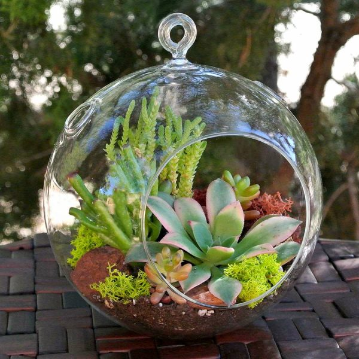

Why Use California Native Plants?
From the California Native Plant Society Website
 While California’s native plants have graced gardens worldwide for over a century, few of the landscapes designed for our state’s gardens reflect the natural splendor for which California is famous. By gardening with native plants, you can bring the beauty of California into your own landscape while also receiving numerous benefits.
Save WaterTake advantage of water conserving plants in your landscape. Once established, many California native plants need minimal irrigation beyond normal rainfall. Saving water conserves a vital, limited resource and saves money, too.
Lower MaintenanceIn a garden environment, native plants do best with some attention and care, but require less water, fertilizer, pruning, less or no pesticide, and less of your time to maintain than do many common garden plants.
Reduce PesticidesNative plants have developed their own defenses against many pests and diseases. Since most pesticides kill indiscriminately, beneficial insects become secondary targets in the fight against pests. Reducing or eliminating pesticide use lets natural pest control take over and keeps garden toxins out of our creeks and watersheds.
Invite WildlifeNative plants, hummingbirds, butterflies, and other beneficial insects are “made for each other. Research shows that native wildlife clearly prefers native plants. California's wealth of insect pollinators can improve fruit set in your garden, while a variety of native insects and birds will help keep your landscape free of mosquitoes and plant-eating bugs.
Support Local EcologyWhile creating native landscapes can never replace natural habitats lost to development, planting gardens, parks, and roadsides with California native plants can help provide an important bridge to nearby remaining wild areas. Recommend native plants to homeowner associations, neighbors, and civic departments. You can also get involved with local land-use planning processes.